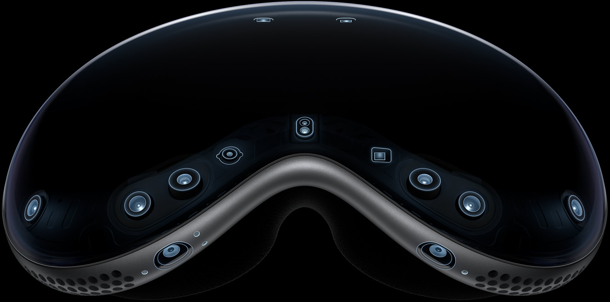
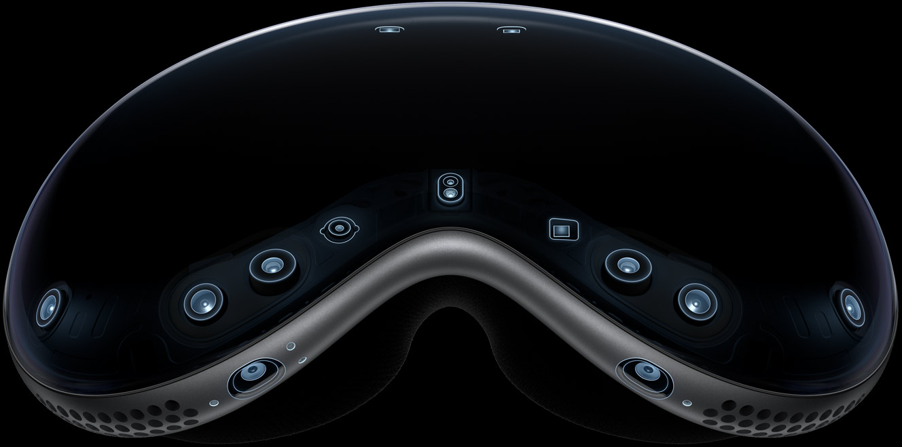

Introduction
Vision Pro
Welcome to the era of spatial computing.
Apple Vision Pro seamlessly blends digital content with your physical space.
You navigate simply by using your eyes, hands, and voice.
So you can do the things you love in ways never before possible.

Watch the film
Watch the event >

Apps
Free your desktop. And your apps will follow.
Your apps live in
your space.
With Vision Pro, you have an infinite canvas that transforms how you use the apps you love. Arrange apps anywhere and scale them to the perfect size, making the workspace of your dreams a reality — all while staying present in the world around you. Browse the web in Safari, create a to-do list in Notes, chat in Messages, and seamlessly move between them with a glance.
Entertainment
The ultimate theater.
Wherever you are.
An immersive way to experience entertainment.
Vision Pro can transform any room into your own personal theater. Expand your movies, shows, and games up to the perfect size while feeling like you're part of the action with Spatial Audio. And with more pixels than a 4K TV for each eye, you can enjoy stunning content wherever you are — whether that's a long flight or the couch at home.
Photos and Videos
Be in the moment.
All over again.
Your memories come alive.
Vision Pro is Apple's first 3D camera. You can capture magical spatial photos and spatial videos in 3D, then relive those cherished moments like never before with immersive Spatial Audio. Your existing library of photos and videos looks incredible at remarkable scale. And panoramas wrap around you — making you feel like you're standing right where you took them.
Connection
Get on the same page.
In the same space.
Make meetings more meaningful.
Vision Pro makes it easy to collaborate and connect wherever you are. FaceTime video tiles are life-size, and as new people join, the call simply expands in your room. Within FaceTime, you can also use apps to collaborate with colleagues on the same documents simultaneously.
Design
Designed by Apple.
Apple Vision Pro is the result of decades of experience designing high performance, mobile, and wearable devices — culminating in the most ambitious product Apple has ever created. Vision Pro integrates incredibly advanced technology into an elegant, compact form, resulting in an amazing experience every time you put it on.
Enclosure A singular piece of three-dimensionally formed laminated glass flows into an aluminum alloy frame that curves to wrap around your face.
Light Seal. The Light Seal gently flexes to conform to your face, delivering a precise fit while blocking out stray light.
Head Band. The Head Band provides cushioning, breathability, and stretch. The Fit Dial lets you adjust Vision Pro precisely to your head.
Power. The external battery supports up to 2 hours of use, and all day use when plugged in.1
Sound. Speakers positioned close to your ears deliver rich Spatial Audio while keeping you aware of your surroundings.
EyeSight. An outward display reveals your eyes while wearing Vision Pro, letting others know when you are using apps or fully immersed.
A singular piece of three-dimensionally formed laminated glass acts as an optical surface for the cameras and sensors that view the world. It flows seamlessly into a custom aluminum alloy frame that gently curves to wrap around your face while serving as an attachment point for the Light Seal.
visionOS
Apple's first spatial
operating system.
Interaction designed for spatial computing.
Built on the foundation of macOS, iOS, and iPadOS, visionOS enables powerful spatial experiences. Control Vision Pro with your eyes, hands, and voice — interactions feel intuitive and magical. Simply look at an element, tap your fingers together to select, and use the virtual keyboard or dictation to type.
Apps leap into life.
In visionOS, apps can fill the space around you, beyond the boundaries of a display. They can be moved anywhere, scaled to the perfect size, react to the lighting in your room, and even cast shadows.


Expand your surroundings.
Environments let you transform the space around you, so apps can extend beyond the dimensions of your room. Choose from a selection of beautiful landscapes, or magically replace your ceiling with a clear, open sky. The Digital Crown gives you full control over how immersed you are.
Stay connected to people around you.
Vision Pro helps you remain connected to those around you. EyeSight reveals your eyes and lets those nearby know when you're using apps or fully immersed in an experience. When someone approaches, Vision Pro simultaneously lets you see the person and reveals your eyes to them.
Technology
Innovation you can
see, hear, and feel.
Pushing boundaries from the inside out. Spatial experiences on Vision Pro are only possible through groundbreaking Apple technology. Displays the size of a postage stamp that deliver more pixels than a 4K TV to each eye. Incredible advances in Spatial Audio. A revolutionary dual chip design featuring custom Apple silicon. A sophisticated array of cameras and sensors. All the elements work together to create an unprecedented experience you have to see to believe.
More pixels than a 4K TV. For each eye.
The custom micro OLED display system features 23 million pixels, delivering stunning resolution and colors. And a specially designed three element lens creates the feeling of a display that is everywhere you look.
Our most advanced
Spatial Audio system ever.
Dual-driver audio pods positioned next to each ear deliver personalized sound while letting you hear what's around you. Ambient Spatial Audio makes sounds feel like they're coming from your surroundings. And with audio raytracing, Vision Pro analyzes your room's acoustic properties — including the physical materials — to adapt and match sound to your space.

 

Revolutionary dual chip performance.
A unique dual chip design enables the spatial experiences on Vision Pro. The powerful M2 chip simultaneously runs visionOS, executes advanced computer vision algorithms, and delivers stunning graphics, all with incredible efficiency. And the brand-new R1 chip is specifically dedicated to process input from the cameras, sensors, and microphones, streaming images to the displays within 12 milliseconds — for a virtually lag-free, real-time view of the world.
Use AR to view
Apple Vision Pro.
Open this page using Safari on
your iPhone or iPad.
An all new platform.
An all new world for developers.
The possibilities for what developers can dream up and build for Vision Pro are endless. And with familiar tools and frameworks like Xcode, SwiftUI, RealityKit, and ARKit, as well as support for Unity and the new 3D-content preparation app Reality Composer Pro, developers have everything they need to create amazing spatial experiences.
Learn more about developing for Apple Vision Pro >